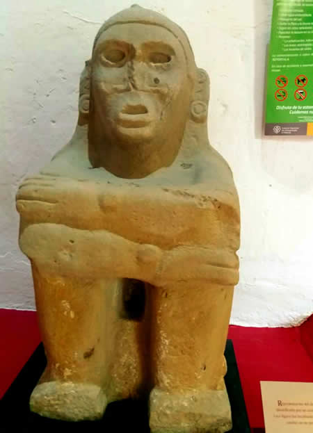

museo dee castillo de teayo,veracruz

una piramide,como muy pocas,que aun conserva,
una gran escalinata entera y un templo enla cima,
y representa el testimonio de una importante ciudad
huasteca que fue influenciada por los toltecas y mexicanas.
el museo invita a conocer una original coleccion de escuitura
de tlaloc y xipe,dioses de la lluvia y el maiz.